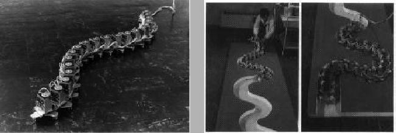
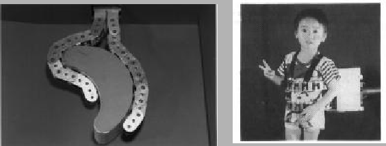

Característica de estar construido a partir de unos componentes estandarizados que se pueden intercambiar. Según el número de módulos distintos, el robot puede ser 1-modular, 2-modular, etc.
En el Hirose & Yoneda Lab[19] fueron pioneros
en el estudio y construcción de robots tipo serpiente (snake-like
robots)[20], que están constituidos por módulos similares.
Un prototipo es el ACM III (Active Cord Mechanism)[21].
Está compuesto por 20 módulos iguales, cada uno de los cuales dispone
de un servomecanismo para girar a derecha o izquierda con respecto
al módulo siguiente (figura ![[*]](crossref.png) ) . El contacto con
el suelo se realiza mediante unas ruedecillas, que permiten que los
módulos se deslicen hacia delante fácilmente, ofreciendo mucha resistencia
al deslizamiento lateral, lo que permite que la serpiente se impulse
hacia adelante. La cabeza describe un movimiento sinusoidal, que se
va propagando hacia el resto de articulaciones a una velocidad constante.
Las carácterísticas del ACM III son:
) . El contacto con
el suelo se realiza mediante unas ruedecillas, que permiten que los
módulos se deslicen hacia delante fácilmente, ofreciendo mucha resistencia
al deslizamiento lateral, lo que permite que la serpiente se impulse
hacia adelante. La cabeza describe un movimiento sinusoidal, que se
va propagando hacia el resto de articulaciones a una velocidad constante.
Las carácterísticas del ACM III son:
|
 |
Se puede encontrar más información en [22,23]
Otro prototipo es OBLIX[25] (figura ),
que se puede mover en las tres dimensiones utilizando articulaciones
oblicuas (oblique swivel joints).
También han empleado robots serpiente para crear manipuladores,
como el SG[24], constituidos también por módulos iguales.
Se trata de una ``pinza'' o ``agarrador mecánico'' que adopta
la forma del objeto que va a coger (fig ),
creando una fuerza que se reparte uniformemente por todo el objeto.
El prototipo es capaz de levantar cuerpos humanos, sin que estos sufran
ningún daño (fig ). Si se utilizasen los
manipuladores clásico, como pinzas, podrían hacer daño al humano en
las zonas de contacto.
|
 |